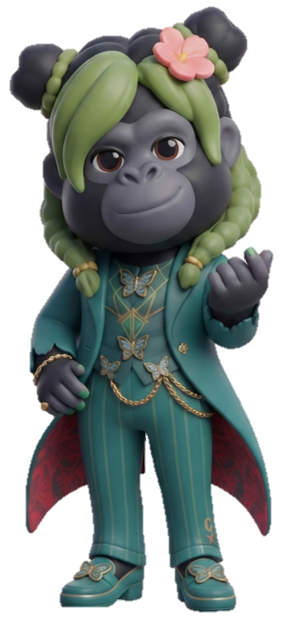

軌跡を集めています…
55,555時間

1回10分の積み重ねが、ここまで来ました。 毎日ひとマスずつ塗ってくれた、ひとりひとりの時間の合計です。 本当にありがとうございます。
そして現在、— 時間。いまも伸びつづけています。
ここまでの軌跡をムービーにしました。
再生ボタンを押すまで、YouTubeへの通信は発生しません。
この日のためのテーマ曲ができました。よかったら聴きながら読んでください。
ゴリゴゴ
帽子と襟に「G」の紋章をつけた、お祭りの座長。みんなを引っぱっていきます。
ゴリウー
青緑の衣装に蝶の刺繍。花を髪に挿した、記念の日の華やかな案内役です。
達成を記念して、期間限定でいくつか仕掛けを置きました。よかったら探してみてください。
🦍
アイコンがゴリラに
サイト中の飾りのアイコンが、期間中だけゴリラたちに入れ替わっています。資格や機能の案内アイコンはそのままなので、迷わずお使いいただけます。
🍌
記念スタンプラリー
トップ・使い方・コツ習慣・追加方法の4ページを回るとスタンプが貯まります。4枚そろうと、ちょっとしたことが起きます。
💬
ゴリラ語モード
トップページの方言スイッチに「ゴリラ語」が増えました。仲間たちの話し方が変わります。
✨
かくれた仕掛け
トップページで 55555 と入力してみてください。何かが起こります。
一緒に積み上げてくれた仲間に、届けてもらえたらうれしいです。